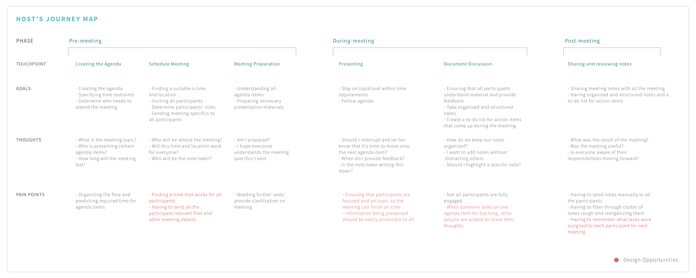

Context
Business professionals conduct meetings regularly to ideate, collaborate and to stay updated on developments within their organization. Over the course of 3 weeks, my team and I sought to find out how we can enhance the meeting experience.
We conducted research on business professionals' current experience with meetings
We interviewed five business professionals. Two from large organizations, two that work with teams of under 10 people and one from a small start-up. Our research showed that meeting attendees and hosts have a different goals and painpoints represented by the following personas:
Micheal Zhong is CEO of a small start-up of just 6 people. He primarily hosts meetings, wants everyone in the meeting to participate and values well organized meeting notes.
Nicole Graham is a Marketing Events Coordinator who works with a team of 24 people. She primarily attends meetings where she is the note taker. She values agenda-driven, punctual meetings because when meetings go overtime, she feels discouraged to share her ideas.
It is important to note here that there are many reasons that people feel discouraged to contribute in meetings. But time-constraints was one that we could tackle within the scope of this project.
Micheal and Nicole have different roles, goals, painpoints and hence experiences meetings differently:


Our research findings showed that people want meetings to be:
1. Punctual
When all attendees are aware of the time constraints, they are less likely to speak on an agenda-item for too long giving everyone more time to contribute. There needs to be a way to keep meetings on track and punctual.
2. Organized
Typing and organizing meeting notes simultaneously is very difficult. There needs to be a way to aid note-takers in organizing notes efficiently.
3. Effortlessly Collaborative
The process of scheduling, organizing and conducting meetings involves house keeping tasks like finding out everyone's schedules, sending relevant information to participants prior to the meeting, distributing meeting notes after the meeting and more. There needs to be a way to streamline these housekeeping tasks.
These user needs serve as design opportunities that we designed NOTA to address
Based on the design opportunities presented, we began to design the following features for NOTA:
1. Scheduling Meetings
a. Determining availability
Nota uses the attendees' google calendars to create an availability chart where the host can select time slots that work for everyone.
b. Creating and Sharing the Agenda
Hosts can create an agenda and add files related to each agenda item when they are creating a meeting. Attendees can review the agenda when they receive a meeting invitation.
2. Agenda-Driven Note Taking
Agenda items are imported onto the note taking interface automatically. Note-takers can then take notes under the agenda items and organize all notes based on the agenda items. Notes are accessible to all attendees in the files section. (See interactive prototype )
3. Efficient To-do Lists
Allows note-takers to assign action items to meeting participants. To-do lists are then available for attendees on their own home pages. (See interactive prototype )
4. Agenda Timer
Lets attendees know how much time is allotted to each agenda item and if they are going over-time.
Explore our interactive prototype & watch our promotional video
Lessons Learned
Our prototype was used to test interactions and task flows and detect any confusing our counter-intuitive interactions. We faced issues with usability testing at first because InVision presented a very realistic but semi-functional prototype to the users. This confused them when the were not able to click on certain links.
Once we provided more context, people were better able to judge the interactions without taking the incomplete functionality into account.
⬅ Previous project
Back to the top